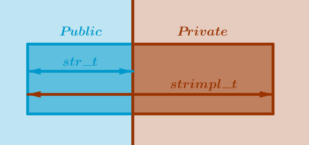

In addition to encapsulating a data type by separating its interface from implementation and making the former public and the latter private the ADT pattern may be used to also bind the data type's state to its public interface.
A variable of a data type encapsulated as ADT can be manipulated via its interface only. ADT is packaged into a header file and a shared library.
By binding the data type's state and its interface into one whole it becomes possible to:
- attach multiple similar but different implementations to a single interface (subject of Factory chapter)
- modify the names of functions that implement the data type's public interface without affecting its end users (the proof is below)
As we remember, Handle's incomplete data type is an opaque pointer to a sole entity - variable's state completely void of any in-place knowledge about its interface. The only physical connection between the two is prototype. Handle's variables (data types) and functions learn about each other's existence only by virtue of the former being passed in as an arguments (parameters) to the latter.
In contrast, ADT is a complete and fully functional C data type because it has a set of pointers to functions constituting what we would call an "interface". The names of functions that implement that interface may be changed by either the one and the only implementation (ADT) or, with a bit of extra work (Factory), by a multitude of similar but different implementations leaving its users unaware of that process in both cases.
The ADT pattern consequences:
Sample Problem
Implement a custom string data type.
Generic Solution Description
1) In a public header file define a public abstract data type whose sole members are pointers to functions that describe what can be done with that data type:
typedef struct adt { int ( *dothis )( struct adt* ); int ( *dothat )( struct adt* ); } adt_t;
Consequently, ADT's functionality can be exercised via the explicit pointer to a function syntax:
var->dothis( var ); var->dothat( var );
Alternatively, ADT's author(s) may wrap the above calls into convenience functions:
extern int adtDoThis( adt_t* adt ) { return adt->dothis( adt ); } extern int adtDoThat( adt_t* adt ) { return adt->dothat( adt ); }
which will allow their users to achieve the same results using a more traditional syntax:
adtDoThis( var ); adtDoThat( var );
2) In the corresponding private implementation .c file(s) define a private implementation data type which we will abbreviate as IDT.
Bind the two data types - ADT and IDT - together using the ANSI C Standard requirement that there can be no space between the very first member of a structure and the beginning of that structure itself. Envelope the IDT around the ADT by making the ADT the very first member of the IDT as a full structure and not a pointer:
typedef struct { adt_t adt; /* Full structure, not a pointer. Very first member. */ int implState; /* State implementation goes here. */ } adtimpl_t;
3) Make all the data type's public functions accept a pointer to ADT as a parameter. Implement these functions in the corresponding .c file(s).
When accepting an ADT variable as input from the outside world into the host library typecast it from ADT to IDT to gain access to its private state variables.
When returning an ADT variable as output to the outside world from the host library, inside which the variable was acted upon as if it were of type IDT, return either the address of its ADT portion or typecast it to look like a pointer to ADT and then return that address (see code and comments below).
4) Package all the ADT implementation files into a shared library.
Sample Solution Implementation
Step 1
In a public header file libstr.h define an abstract data type str_t that has only pointers to functions as its members. We will start with string comparison:
libstr.h:
#include <sys/types.h> typedef struct str { int ( *cmp )( struct str*, struct str*, int ); } str_t;
Step 2
Add the prototypes of the public life cycle functions:
libstr.h:
#include <sys/types.h> typedef struct str { int ( *cmp )( struct str*, struct str*, int ); } str_t; extern str_t* strNew( const char* ); extern void strDelete( str_t** ); extern str_t* strConstruct( void*, const char* ); extern void strDestruct( str_t* ); extern size_t strSizeOf();
Step 3
Add the prototype of the public string comparison convenience function:
libstr.h:
#include <sys/types.h> typedef struct str { int ( *cmp )( struct str*, struct str*, int ); } str_t; extern str_t* strNew( const char* ); extern void strDelete( str_t** ); extern str_t* strConstruct( void*, const char* ); extern void strDestruct( str_t* ); extern size_t strSizeOf(); extern int strCmp( str_t*, str_t*, int );
Step 4
In the file libstr.c define a private string implementation data type strimpl_t (IDT) which will be visible only inside this file.
If strimpl_t has to be shared among several implementation .c files then put it into a separate private header file, libstrimpl.h perhaps, and do not share this file with anyone else.
To bind str_t (ADT) to strimpl_t (IDT) define strimpl_t in such a way that str_t is its very first member. Make sure that str_t is a full structure - not a pointer.
Commentary
The ANSI C Standard states that no space, or padding, is allowed between the beginning of a structure and its very first member. Padding is allowed between the consequent members within a structure for architectural reasons, to align these members on the needed address boundaries for example. However, there should be no padding between the first member and the beginning of a structure.
Because of this rule it becomes possible to associate two items with one memory address - the public ADT and the private IDT. We will make this address to be an address of an ADT when releasing it into the wild from the host library. Conversely, we will make this address to be an address of an IDT when accepting it back from the wild into the host library. The mechanism for changing the relevant data types back and forth is, again, typecasting.
As a consequence we achieve the desired separation of labor between the interface and its implementation - the former remains public while the latter - private:
libstr.c:
#include <stdio.h> #include <stdlib.h> #include <string.h> #include <strings.h> #include "libstr.h" typedef struct { /* String's ADT - not a pointer, full structure. Make it the very first member. This passes the ANSI C Standard muster. Public: users only see this member's address (which happens to be the entire structure's address also). */ str_t stradt; /* Implementation details. Private: users will not see this. */ size_t bufsz; char* buf; } strimpl_t; static int strCmpImpl( str_t*, str_t*, int ); /* This structure is used to initialize many functions at once. Add more functions here as string library is developed. Used by strConstruct(), see below. */ static str_t strAdt = { strCmpImpl }; extern size_t strSizeOf() { return sizeof( strimpl_t ); } extern str_t* strNew( const char* istr ) { void* simpl = calloc( 1, strSizeOf() ); str_t* s = strConstruct( simpl, istr ); return s; } extern str_t* strConstruct( void* smem, const char* istr ) { strimpl_t* simpl = ( strimpl_t* )smem; /* This initializes string's public interface. */ simpl->stradt = strAdt; /* This initializes string's private state (implementation). */ if ( istr && *istr ) { simpl->bufsz = strlen( istr ); } else { simpl->bufsz = 32; } simpl->bufsz += sizeof( char ); simpl->buf = calloc( simpl->bufsz, sizeof( char ) ); if ( istr && *istr ) { memcpy( simpl->buf, istr, simpl->bufsz ); } else { simpl->buf[ 0 ] = '\0'; } /* This is what users see - the public portion of the bound IDT + ADT whole: ADT only. */ return &simpl->stradt; } extern void strDestruct( str_t* str ) { strimpl_t* simpl; if ( !str ) { return; } /* This is what ADT's authors see - public and private portions - interface and implementation. */ simpl = ( strimpl_t* )str; if ( simpl->buf ) { /* Balances calloc() in strConstruct(). */ free( simpl->buf ); } memset( simpl, 0, sizeof( strimpl_t ) ); } extern void strDelete( str_t** str ) { if ( !str && !*str ) { return; } strDestruct( *str ); /* Balances calloc() in strNew(). */ free( *str ); *str = ( str_t* )NULL; } /* Public convenience function. */ extern int strCmp( str_t* s1, str_t* s2, int caseSensitive ) { int rv; rv = s1->cmp( s1, s2, caseSensitive ); return rv; } /* Private implementation of string comparison. */ static int strCmpImpl( str_t* s1, str_t* s2, int caseSensitive ) { int rv; int ( *scmp )( const char*, const char*, size_t ); /* ANSI C Standard rule makes this possible. */ strimpl_t* simpl1 = ( strimpl_t* )s1; strimpl_t* simpl2 = ( strimpl_t* )s2; printf( "%s:%d: strCmpImpl( \"%s\", \"%s\", %d )\n", __FILE__, __LINE__, simpl1->buf, simpl2->buf, caseSensitive ); scmp = caseSensitive ? strncmp : strncasecmp; rv = scmp( simpl1->buf, simpl2->buf, strlen( simpl1->buf ) ); return rv; }
Step 5
Package the string files into a shared library:
gcc -g -c -fPIC -I . libstr.c gcc -g -shared -o libstr.so libstr.o
Step 6
Write a sample application to use the ADT pattern:
str.c:
#include <stdio.h> #include "libstr.h" extern int main( int argc, char* argv[] ) { str_t* s1; str_t* s2; if ( argc != 3 ) { return 1; } s1 = strNew( argv[ 1 ] ); s2 = strNew( argv[ 2 ] ); printf( "Strings s1 and s2 are %s equal.\n", strCmp( s1, s2, 1 ) ? "not" : "" ); strDelete( &s1 ); strDelete( &s2 ); return 0; }
Step 7
Build the sample ADT application. We will link the string library in explicitly:
gcc -g -c -I . str.c gcc -g -L . -o str str.o -lstr
Step 8
Run the sample program with various inputs:
./str hello world libstr.c:188: strCmpImpl( "hello", "world", 1 ) Strings s1 and s2 are not equal. ./str hello hello libstr.c:188: strCmpImpl( "hello", "hello", 1 ) Strings s1 and s2 are equal.
Cost Analysis
The sum total of all the files that must be modified to accommodate a change to strimpl_t is equal to three:
1) libstr.c
2) libstr.o
3) libstr.so
Proof:
Let us assume that to improve the performance of our string library we want to add an extra state variable that will store the actual length of the current string at all times, slen. This state variable is not to be confused with the already existing state variable that stores the size of the allocated buffer, bufsz.
The steps required to implement the above change are:
- Add size_t slen to strimpl_t in libstr.c:
typedef struct { str_t stradt; size_t bufsz; char* buf; size_t slen; } strimpl_t;
- Addjust strConstruct() and strCmpImpl() in libstr.c:
extern str_t* strConstruct( void* smem, const char* istr ) { ... s->buf = calloc( s->bufsz, sizeof( char ) ); if ( istr && *istr ) { memcpy( s->buf, istr, s->bufsz ); s->slen = s->bufsz - sizeof( char ); } else { s->buf[ 0 ] = '\0'; s->slen = 0; } return ( str_t* )s; } static int strCmpImpl( str_t* s1, str_t* s2, int caseSensitive ) { int rv; int ( *scmp )( const char*, const char*, size_t ); strimpl_t* str1 = ( strimpl_t* )s1; strimpl_t* str2 = ( strimpl_t* )s2; printf( "%s:%d: strCmp( \"%s\", \"%s\", %d )\n", __FILE__, __LINE__, str1->buf, str2->buf, caseSensitive ); scmp = caseSensitive ? strncmp : strncasecmp; rv = scmp( str1->buf, str2->buf, str1->slen ); return rv; }
- Rebuild the libstr.o file:
gcc -g -c -fPIC -I . libstr.c
- Rebuild the libstr.so file:
gcc -g -shared -o libstr.so libstr.o
The str application is impervious to the above change.
Let us now present the proof of the previously made statement that the names of functions that implement our string's public interface can be changed without affecting their users.
In the current state of its implementation str_t has only one worker function: cmp(). Consequently, it is required to prove that if the name strCmpImpl is changed it will not affect its users - their code will work without recompilation.
Even though cmp() in str_t is a public entity, it is a pointer that must be initialized prior to its use. The two distinct operations of "initialization" and "use" or "invocation" are separated in space and time by the virtue of our string ADT being packaged into a shared library.
These operations are separated in space because cmp() is initialized inside libstr.so, in libstr.c by strConstruct() to a library-private name strCmpImpl, while it is being used inside str, in the str.c file.
These operations are separated in time because libstr.so must be compiled before the str (or any other) application can use it.
As such, the private name attached to cmp() can be changed between the invocations of str without affecting that program. The qualifier static in the prototype of strCmpImpl() ensures that that name is visible only inside the libstr.c file.
From Here
Using string length as a sample new public function here is how to add it to our string's interface:
- Add the new function pointer to str_t in the public header file, libstr.h:
typedef struct str { int ( *cmp )( struct str*, struct str*, int ); size_t ( *length )( struct str* ); } str_t;
- Add the function prototype of the convenience function in the public header file libstr.h:
extern size_t strLength( str_t* );
- Add the new function name to the ADT initializer in the libstr.c file:
static int strCmpImpl( str_t*, str_t*, int ); static size_t strLengthImpl( str_t* ); static str_t strAdt = { strCmpImpl, strLengthImpl };
- Implement the new convenience and the actual functions in the libstr.c file:
extern size_t strLength( str_t* s ) { size_t sl; sl = s->length( s ); return sl; } static size_t strLengthImpl( str_t* s ) { strimpl_t* si = ( strimpl_t* )s; return si->slen; }
- Rebuild the string library:
gcc -g -c -fPIC -I . libstr.c gcc -g -shared -o libstr.so libstr.o
- Rebuild the relevant dependencies on the string library only if they have been modified to reflect the changes in str_t's public interface. Observe here that the dependencies that wish to ignore these changes do not have to be rebuilt. For example, if we have added strLength() to our string library then without any further changes, as is, our sample program str will work without recompilation.
Automation
To eliminate the repetitive typing it is possible to automate the initial ADT's implementation process. Below is a sample template consisting of two files, libadt.h and libadt.c, which contain the name TYPE as a stand in for the name of the data type of your choice, the initial set of life cycle functions and one sample data type manipulation function.
libadt.h:
#include <sys/types.h> typedef struct TYPE { int ( *func )( struct TYPE* ); } TYPE_t; extern TYPE_t* TYPENew(); extern void TYPEDelete( TYPE_t** ); extern TYPE_t* TYPEConstruct( void* ); extern void TYPEDestruct( TYPE_t* ); extern size_t TYPESizeOf(); extern int TYPEFunc( TYPE_t* );
libadt.c:
#include <stdio.h> #include <stdlib.h> #include <string.h> #include <strings.h> #include "libTYPE.h" typedef struct { TYPE_t TYPEadt; /* State variables go here. */ } TYPEimpl_t; extern int TYPEFunc( TYPE_t* ); static TYPE_t TYPEAdt = { TYPEFunc }; extern size_t TYPESizeOf() { return sizeof( TYPEimpl_t ); } extern TYPE_t* TYPENew() { void* impl = calloc( 1, sizeof( TYPEimpl_t ) ); return TYPEConstruct( impl ); } extern TYPE_t* TYPEConstruct( void* mem ) { TYPEimpl_t* impl = ( TYPEimpl_t* )mem; impl->TYPEadt = TYPEAdt; /* Construction code goes here. */ return &impl->TYPEadt; } extern void TYPEDestruct( TYPE_t* TYPE ) { TYPEimpl_t* impl; if ( !TYPE ) { return; } impl = ( TYPEimpl_t* )TYPE; /* Destruction code goes here. */ } extern void TYPEDelete( TYPE_t** TYPE ) { if ( !TYPE && !*TYPE ) { return; } TYPEDestruct( *TYPE ); free( *TYPE ); *TYPE = ( TYPE_t* )NULL; } extern int TYPEFunc( TYPE_t* TYPE ) { TYPEimpl_t* impl = ( TYPEimpl_t* )TYPE; return 0; }
A sample Korn shell script below accepts a name of a custom data type as an argument, copies the ADT's template files into the new ones named after the given type and replaces the name TYPE with the given one.
mkadt.sh:
#!/bin/ksh TP="$1" cat libadt.h | sed "s/TYPE/"${TP}"/g" > lib${TP}.h cat libadt.c | sed "s/TYPE/"${TP}"/g" > lib${TP}.c
Run this script as follows:
./mkadt.sh str
Exercises
1) Compare this (ADT) string implementation with its Handle counterpart from the previous chapter. Make sure you understand the differences.
2) Implement the four popular container types - an array, a list, a binary tree and a hash table - as ADTs.
3) Implement the ADT versions of strToBytes() and strFromBytes() functions.
4) Write a sample program that:
- converts a string variable into an array of bytes
- converts the above array of bytes into a new string variable
- compares the original and the new string variables
Files
\(\blacksquare\)